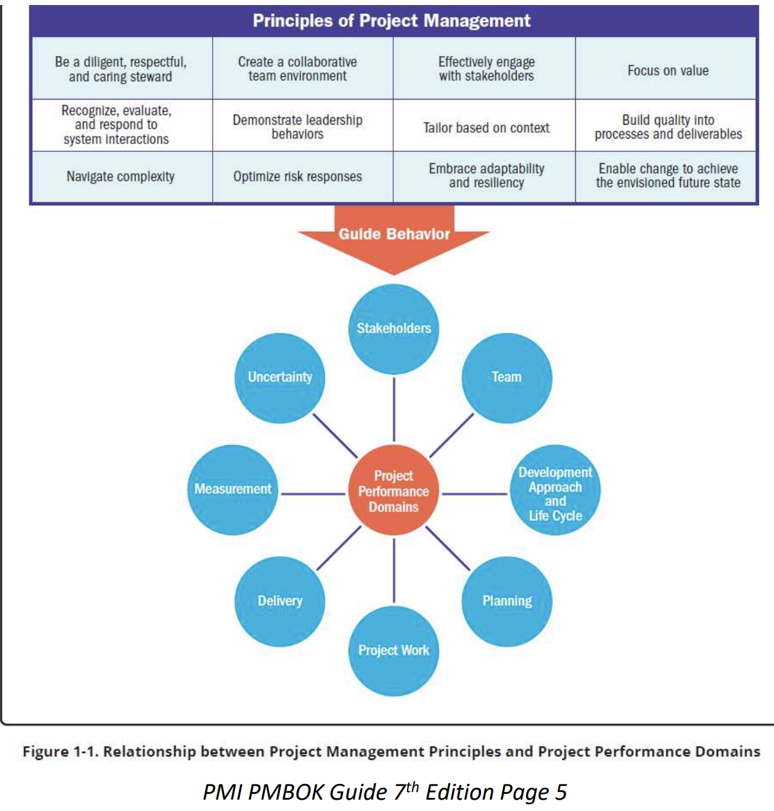

Performance Domains:
Domains are a group of related activities that are critical for the
effective delivery of project outcomes.They are interactive,
interrelated, and interdependent areas of focus that work in unison to
achieve desired project outcomes. They operate as an integrated
system, with each domain being interdependent of the other domains to
enable successful delivery of the project and its intended outcomes.
The specific activities undertaken within each of the performance
domains are determined by the context of the organization, the
project, deliverables, the project team, stakeholders, and other
factors.

- Stakeholders performace domain:
Identify the stakeholders throughout the project, understand and
analyse their requirements, values and beliefs, prioritise the
stakeholders, engage with the stakeholders at required level and
then monitor the stakeholders.
- Team performance domain:
Deals with activities and functions associated with the people who
are responsible for creating project deliverables that realize
business outcomes. This performance domain entails establishing the
culture and environment that enables a collection of diverse
individuals to evolve into a high-performing project team.
- Development approach and lifecycle performance domain:
Deals with activities and functions associated with the development
approach, cadence, and life cycle phases of the project.
- Planning performace domain:
Deals with activities and functions associated with the initial,
ongoing, and evolving organization and coordination necessary for
delivering project deliverables and outcomes. The purpose of
planning is to proactively develop an approach to create the project
deliverables.
- Project work performace domain:
Deals with activities and functions associated with establishing
project processes, managing physical resources, and fostering a
learning environment. Project work is connected with establishing
the processes and performing the work done by the project team to
deliver the expected deliverables and outcomes.
- Project delivery performance domain:
Deals with activities and functions associated with delivering the
scope and quality that the project was undertaken to achieve.
Project delivery is about meeting requirements, scope, and quality
expectations to produce the expected deliverable.
- Measurement Performance Domain:
Deals with activities and functions associated with assessing
project performance and taking appropriate actions to maintain
acceptable performance. Involves measuring project performance and
implementing appropriate responses to keep the project on track.
This domain evaluates the amount to which the work done in the
Delivery Performance Domain is meeting the metrics identified in the
Planning Performance Domain.
- Uncertainty Performance Domain:
Deals with activities and functions associated with risk and
uncertainty. Projects happen in environments with varying degrees of
uncertainty. Uncertainty in the broadest sense is a state of not
knowing or unpredictability. Uncertainty presents threats and
opportunities that project teams explore, assess, and decide how to
handle.
Common ITTOs:
Enterprise environmental factors EEF:
Things that impact the project but are not part of the project itself
- Internal:
- Organisational structure and Governance
- Organisational culture
- Appetite for risk
- Established communication channels
- IT software
- Geographical distribution of facilities and resources
- Infrastructure
- Resource availablity
- Employee capability
- External:
- Political climate
- Government and industry standards
- Commercial databases
- Legal restrictions
- Financial considerations
Organisational Process Assets OPA:
Organizations have assets such as information, policies, procedures,
documents, or knowledge bases which are called Organizational Process
Assets (OPA) to help them in achieving their objectives. These are
generally provided by PMO and kept in some central repository so that
they can be used whenever required. Project team members update and
add to the Organizational Process Assets throughout the project.
Following are the examples:
- Project templates
- Software tools
- Historic information
- Project closure guidelines
- Risk control procedures
- Change control procedures
- Issue and defect management procedures
Project documents:
Project documents are additional documents that are created and used
throughout the 49 processes that are not part of the project
management plan. These can be any documents that are related to the
project.
Project management plan:
Defines how the project is executed, monitored and controlled, and
closed.
Expert judgement:
Includes hiring an expert or subject matter expert (SME) to help you
to plan a process or conduct a process
Data Gathering, Data Analysis, Data Representation, Decision Making:
-
Data Gthering: On certain processes, you will need
to gather additional data before coming up with an output for that
process. Gather data about a particular process that you’re working
on by using methods like brainstorming, interviews, focus groups,
checklist, questionnaires and surveys etc.
-
Data Analysis: To analyze the data that has been
gathered using methods alternative analysis, root cause analysis,
varience analysis, trend analysis.
-
Data Representation: Illustrate different ways that
a data could be shown to stakeholders using flowcharts, fishbone
diagrams, histograms etc.
-
Decision Making: Have to make a decision on what to
do with the data using methods like voting, multicriteria decision
analysis, autocratic decision making etc.
Interpersonal and Team Skills:
All project managers need to have good interpersonal and team skills
in order to manage the different stakeholders that will be on the
project. These include active listening, conflict management,
facilitation, meeting management etc.
Meetings:
Meetings can be done face-to-face or virtually. Meetings need to have
an agenda and should be distributed to all the attendees before the
meeting. Meetings must be timed, including having set start and finish
times for topics and the entire meeting. Meeting always stays on topic
and does not go off topic and all attendees have to input to the
topics. Minutes of meetings must be distributed once the meeting is
done.
Project Management Information System (PMIS):
Automated system that is used to help the project manager optimize the
schedule or keep track of all the documents and the deliverables. This
include all the software and hardware tools that we need to manage the
project from start to finish.
Change request:
Proposal to change a document, deliverable, or baseline.This can
include a request to add or remove work from the scope, finish the
project faster, or complete the project more cheaply. This can be done
by corrective actions, preventive actions or defect repair.
Work Performance Data, Information, Report:
- Work performance data: The raw data
-
Work performace informationInformation of the work
that was performed compared to the plan
-
Work Performance Report: overall status report of
the actual project
You take the work performance data and compare it against the plan
to come up with the work performance information. Then you take all
the work performance information and create the work performance
reports. In short, data feeds info and all the info creates
reports.
Updates:
Updates can include project documents, the project management plan,
OPA and EEF updates